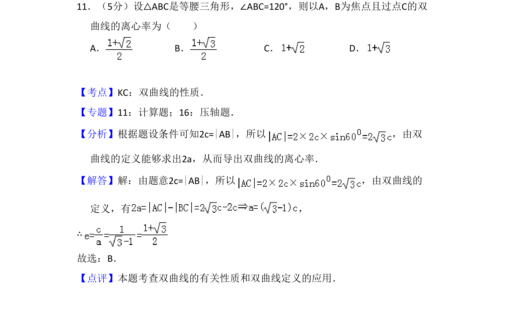
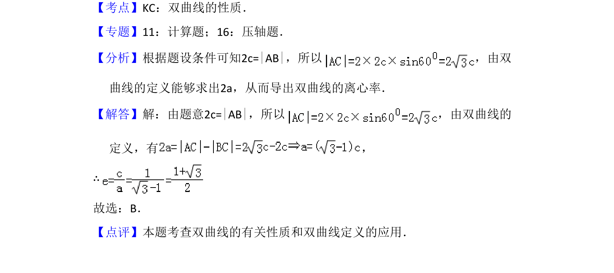

考点：解析几何 双曲线 三角函数

等腰三角形ABC中∠ABC=120°，以A、B为焦点过顶点C的双曲线离心率，综合三角与双曲线定义。

📄 原 PDF 第 6 页：
素材/真题/吉林/2008-2024·（吉林）数学高考真题/2008年高考数学试卷（文）（全国卷Ⅱ）（解析卷）.pdf
11．（5分）设△ABC是等腰三角形，∠ABC=120°，则以A，B为焦点且过点C的双 曲线的离心率为（ ） A．B．C．D．
【考点】KC：双曲线的性质．菁优网版权所有 【专题】11：计算题；16：压轴题． 【分析】根据题设条件可知2c=|AB|，所以 ，由双 曲线的定义能够求出2a，从而导出双曲线的离心率． 【解答】解：由题意2c=|AB|，所以 ，由双曲线的 定义，有 ， ∴ 故选：B． 【点评】本题考查双曲线的有关性质和双曲线定义的应用．